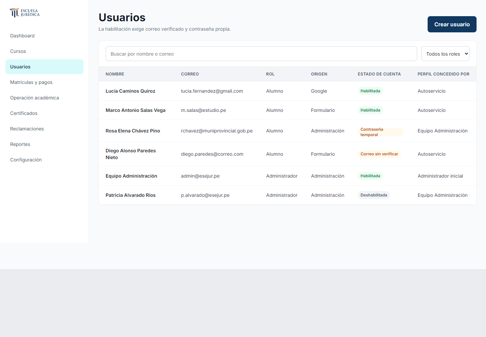
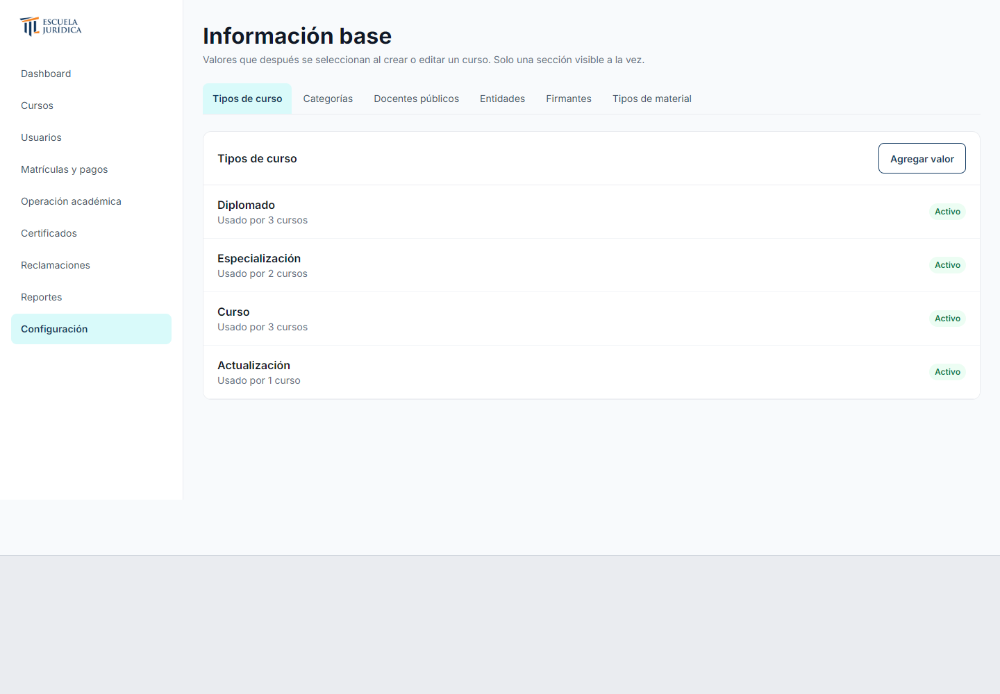
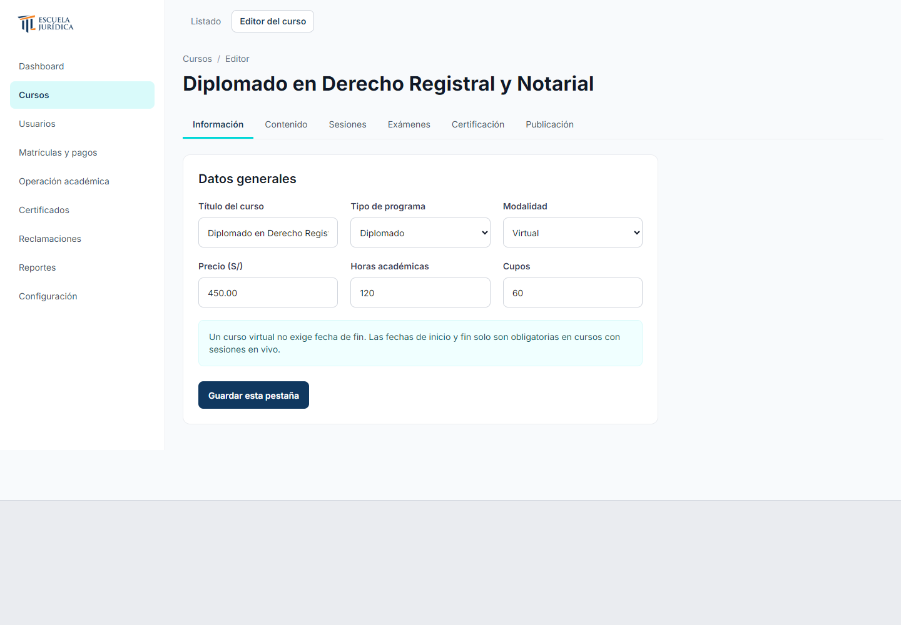
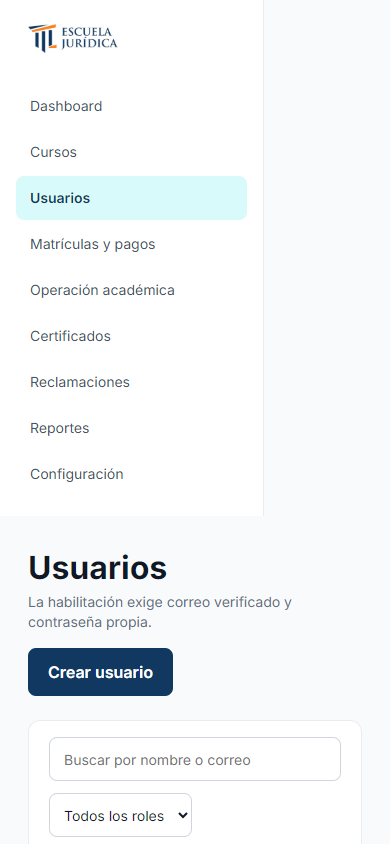
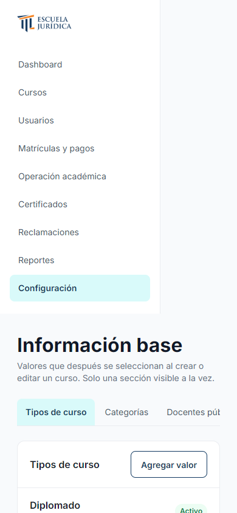

ESEJUR · Pantallas SVG
HTML principal, estado inicial de cada pantalla. Escritorio: 1440 px. Celular: 390 px. Sin barra de revisión. SVG estáticos con texto trazado.
EP02 · PF-010 · HU-008 · Gestión de usuarios — escritorio
Abrir SVG · Referencia PNG

EP02 · PF-012 · Información base — escritorio
Abrir SVG · Referencia PNG

ADM · PF-014 · Editor del curso — escritorio
Abrir SVG · Referencia PNG

EP02 · PF-010 · HU-008 · Gestión de usuarios · principal — celular
Abrir SVG · Referencia PNG

EP02 · PF-012 · Información base · principal — celular
Abrir SVG · Referencia PNG

ADM · PF-014 · Editor del curso · principal — celular
Abrir SVG · Referencia PNG